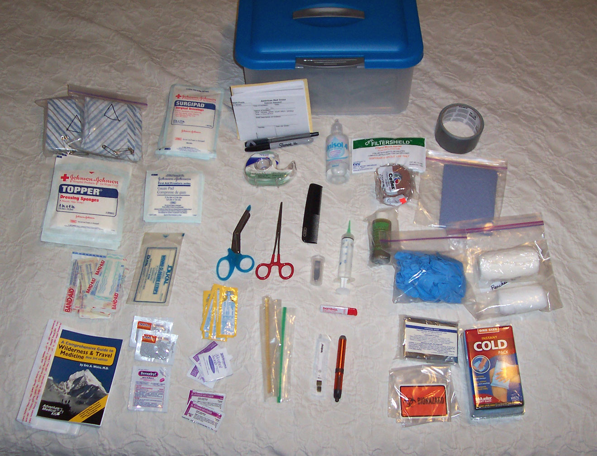
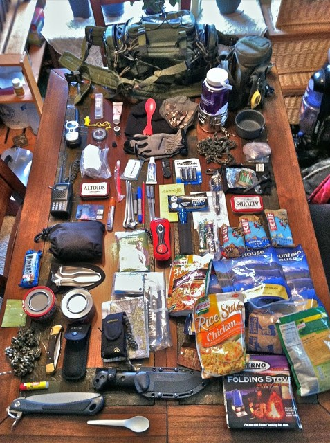

This is one of the most important items you should pack in your
bugout bag, it allows you to treat minor injuries where you might
not be able to get professional medical care.
Some common items a first aid kit should include are:
- Bandaids
- Alcohol Pads/Antiseptic Wipes
- Gauze Pads
- Adhesive Tape (For Gauze Pads)
- Antiboitic Ointment
- Pain Relievers (Ibuprofen/Aspirin)
- Allergy Medications
- Any Personal Medications
This is just a list to get you started, there are many more items
you could include in your first aid bag.

Food:
Foods put into a Bug out Bag should be non-perishable, lightweight,
energy dense, and easy to prepare.
Some good food items to pack could be:
High-Energy Bars:
Energy bars, protein bars, or
meal replacement bars are lightweight, nutrient-dense, and
can provide a quick energy boost. They require no
preparation.
Ready-to-Eat Meals (MREs):
While slightly bulkier, MREs are
calorie-dense and come with everything needed to prepare and
eat the meal. They often include heaters that require no
flame.
Freeze-Dried/Dehydrated Meals:
These meals are lightweight and
compact. All you need is water (preferably hot) to rehydrate
and eat.
Nuts and Trail Mix:
They offer a mix of protein,
essential fats, and carbohydrates, providing sustained
energy. They're also easy to eat on the move.
Jerky (Beef, Turkey, or Vegan Alternatives):
Jerky is protein-rich and can
help maintain muscle mass and energy levels.
Peanut Butter or Nut Butters:
They are high in protein and
healthy fats, providing long-lasting energy. You can buy
them in single-serving packets.
Dried Fruits:
They offer quick energy and
essential vitamins. They can be mixed with nuts for a
balanced snack.
Water or Drink Mixes:
Electrolyte powders or drink
mixes can help replace lost minerals if sweating or exerting
a lot of energy. They can also mask the taste of treated
water.

Additional Items to be Packed:
Other notable items your Bug-out-Bag should include are: